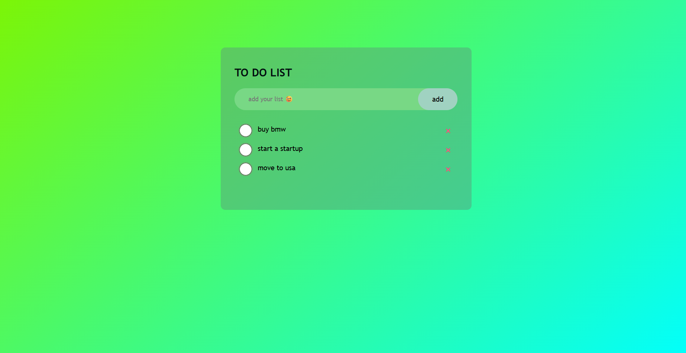
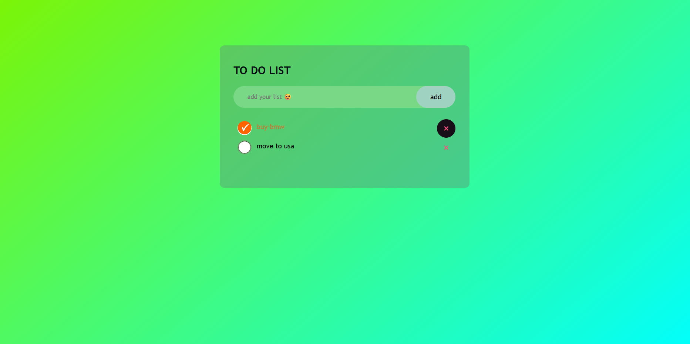

TO -DO-LIST
To-Do List is a responsive task management application that helps users organize, track, and manage their daily tasks through a clean and user-friendly interface.
Built using HTML, CSS, and JavaScript, it provides interactive task management and demonstrates my frontend development skills.
html
css
js


